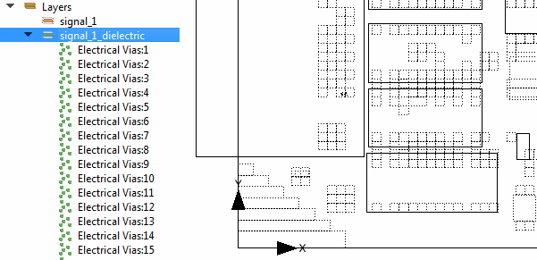

Image files of PCB dielectric layers can
be used to create a complex distribution of electrical vias.
Restrictions and Limitations
Procedure
- This step
depends on how the board design has been loaded:
If the board design has been
loaded by importing an ODB++ file, images representing the distribution
of metal on metallic layers and the distribution of electrical vias
on dielectric layers will be automatically attached to the appropriate
layers in the data tree.
If the board
design has not originated from an ODB++ file, then add the appropriate
Dielectric layers manually, see “Layers”.
- Right-click
a Dielectric layer in the data tree and choose Process
Layer from the popup menu.
If
File Name in the Layer property sheet has been set to the name of an
image file, the Dielectric Layer Vias Processing dialog box is opened,
otherwise a file browser is opened to select the image before the
dialog box is opened.
- Use the
dialog box to adjust the representation.
Image colors can be optionally inverted when the range
is processed into vias.
- When finished,
click Create Vias.
Results
Electrical Vias are created in the data tree under the respective
dielectric layer.
Figure 1. Electrical
Vias Generated in a Dielectric Layer
The Layer Type field in the Layer property sheet is not editable
when vias are defined in the layer.